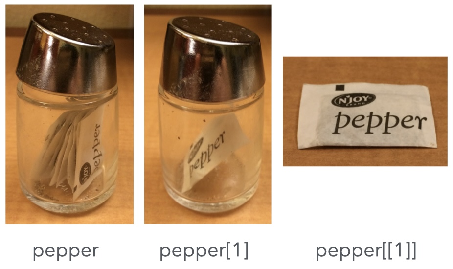

![]()
[1] 5[1] 0.6931472[1] 1024The R Statistical Language · Session 1
Press C any time. A code popover (the </> button bottom-right) reveals the source behind any slide: read ahead, or ignore it for now.
## Why R {.inv}
- A programming language purpose-built for **statistics** and **data science**.
- [Open source]{.green} with a fast-growing ecosystem.
- [Packages]{.amber} for (almost) everything:
- data processing and cleaning, visualization, statistical modelling;
- interactive web apps ({shiny});
- typesetting, articles, slides (Quarto!).
- A **high-level** language: it shields you from low-level technicalities so you can focus on the analysis.
::: {.callout-desc}
**Press <kbd>C</kbd> any time.** A *code popover* (the `</>` button bottom-right) reveals the source behind any slide: read ahead, or ignore it for now.
:::
R centres on two complementary toolkits:
Base R: ships with every installation, so it needs zero setup (works offline, even in locked-down environments). Functions like mean(), plot(), c(), [. Powerful and always available, but its ergonomics date back decades.
The tidyverse: an opinionated collection of packages (dplyr, ggplot2, tidyr, readr) sharing one grammar. Install once, then library(tidyverse) loads them all. The default toolkit for modern data work.
In this course we start from base R so you understand the foundations, then lean on the tidyverse for day-to-day work.
## The R ecosystem {.paper}
::: {.paper-card}
R centres on two complementary toolkits:
::: {.side-panels}
::: {.side-panel .p-base}
**Base R**: ships with every installation, so it needs **zero setup** (works offline, even in locked-down environments). Functions like `mean()`, `plot()`, `c()`, `[`. Powerful and always available, but its ergonomics date back decades.
:::
::: {.side-panel .p-tidy}
**The tidyverse**: an *opinionated collection* of packages (`dplyr`, `ggplot2`, `tidyr`, `readr`) sharing one grammar. Install once, then `library(tidyverse)` loads them all. The default toolkit for modern data work.
:::
:::
In this course we start from **base R** so you understand the foundations, then lean on the **tidyverse** for day-to-day work.
:::
R isn’t the only player. Knowing the landscape helps you choose the right tool.
Stata / SAS / SPSS: proprietary statistical software. Easy for standard methods, certified in regulated settings (health, insurance), but not good programming languages.
Python: a general-purpose language, standard in industry. Not built for statistics, but extremely active in machine learning. More boilerplate for everyday data work; you’ll meet it again in the Reproducible Workflows course.
Julia: a young, fast numerical language. Growing in machine learning, less focused on out-of-the-box data wrangling.
R vs the rest? R gives you the richest statistics ecosystem and the least friction between idea and analysis: at the cost of some “different from other languages” idioms.
## Alternatives to R {.inv}
R isn't the only player. Knowing the landscape helps you choose the right tool.
::: {.spread .spread-md .spread-evenly}
**[Stata]{.green} / [SAS]{.green} / [SPSS]{.green}**: proprietary statistical software. Easy for standard methods, certified in regulated settings (health, insurance), but not good *programming* languages.
**[Python]{.amber}**: a general-purpose language, standard in industry. Not built *for* statistics, but extremely active in machine learning. More boilerplate for everyday data work; you'll meet it again in the Reproducible Workflows course.
**[Julia]{.indigo}**: a young, fast numerical language. Growing in machine learning, less focused on out-of-the-box data wrangling.
**R vs the rest?** R gives you the richest statistics ecosystem and the least friction between *idea* and *analysis*: at the cost of some "different from other languages" idioms.
:::
Keep these bookmarked:
R for Data Science (2nd ed.): the tidyverse workflow, free online: https://r4ds.hadley.nz
An Introduction to R: the base-R manual: https://cran.r-project.org/doc/manuals/r-release/R-intro.pdf
Advanced R: for later, to become a good R programmer: https://adv-r.hadley.nz
Cheatsheets (1-page package summaries): https://posit.co/resources/cheatsheets/
Hint. The single most useful habit when you’re stuck: read the help page, start at the Examples section at the bottom, then adapt. Help is one keystroke away (?function).
## Resources to learn R {.inv}
Keep these bookmarked:
::: {.spread .spread-md .spread-evenly}
**R for Data Science** (2nd ed.): the tidyverse workflow, free online: <https://r4ds.hadley.nz>
**An Introduction to R**: the base-R manual: <https://cran.r-project.org/doc/manuals/r-release/R-intro.pdf>
**Advanced R**: for later, to become a *good* R programmer: <https://adv-r.hadley.nz>
**Cheatsheets** (1-page package summaries): <https://posit.co/resources/cheatsheets/>
:::
::: {.callout-desc}
**Hint.** The single most useful habit when you're stuck: read the help page, start at the **Examples** section at the bottom, then adapt. Help is one keystroke away (`?function`).
:::
This session’s map:
Each block hands off to a short hands-on lab: slides get you running, lab makes it stick.
## A quick orientation tour {.inv}
::: {.session-arc}
<div class="step s1 current"><span class="n">1</span>Foundations</div><div class="connector"></div><div class="step s2"><span class="n">2</span>Explore your data</div><div class="connector"></div><div class="step s3"><span class="n">3</span>Repeat & package</div>
:::
This session's map:
::: {.spread .spread-md .spread-evenly}
- the [console]{.green} and your first [R script]{.green};
- R as a [calculator]{.green}, functions, and [assignment]{.green};
- [data types]{.green}: numeric, integer, character, logical;
- [vectors]{.amber}: the workhorse data structure, and how to subset them;
- [lists]{.amber}: containers of *anything*;
- [data frames]{.indigo} & [tibbles]{.indigo}: the data-table you'll analyse;
- [reading]{.indigo} & writing data files.
Each block hands off to a short **hands-on lab**: slides get you running, lab makes it stick.
:::
Four installations get you a full data-science environment:
R: the language. Installed from CRAN.
Positron: the IDE we use in this course (a data-science-focused editor running both R and Python).
Quarto: the publishing system. We’ll use it for reproducible reports and (later) your portfolio.
The tidyverse: the collection of R packages underpinning the modern workflow.
## Your toolbox {.inv}
Four installations get you a full data-science environment:
::: {.spread .spread-md .spread-evenly}
**[R]{.green}**: the language. Installed from CRAN.
**[Positron]{.green}**: the IDE we use in this course (a data-science-focused editor running both R and Python).
**[Quarto]{.amber}**: the publishing system. We'll use it for reproducible reports and (later) your portfolio.
**[The tidyverse]{.indigo}**: the collection of R packages underpinning the modern workflow.
:::
Follow the step-by-step guide now, then verify your install runs:
https://astamm.github.io/r-ensai → Setup Tab
Live block (≈15 min). Install R, Positron, Quarto, then install.packages("tidyverse"); confirm with library(tidyverse). Already set up? Verify R.version.string / quarto --version, then help a neighbour. If a check errors, fix it now: broken installs slow every lab.
## Install & check your setup {.inv}
Follow the step-by-step guide now, then verify your install runs:
<https://astamm.github.io/r-ensai> → [**Setup Tab**](https://astamm.github.io/r-ensai/setup.html)
::: {.split-2}
::: {.codewindow .r width="100%"}
R version check
```r
R.version.string # e.g. "R version 4.6.1"
```
:::
::: {.codewindow .bash width="100%"}
Terminal: `quarto --version`
```bash
quarto --version # e.g. 1.10.x
```
:::
:::
::: {.callout-desc}
**Live block (≈15 min).** Install R, Positron, Quarto, then `install.packages("tidyverse")`; confirm with `library(tidyverse)`. **Already set up?** Verify `R.version.string` / `quarto --version`, then help a neighbour. If a check errors, fix it *now*: broken installs slow every lab.
:::
Every R statement runs in one of two places:
The Console: type code, see results immediately. Great for quick experiments (2 + 3), inspecting objects (str(x)), and trying one-liners. But what you type is not saved: nothing remains for tomorrow.
An R Script (.R file): your code lives in a file, is persistent, and can be re-run any time (source("my_script.R"), or Cmd/Ctrl+Enter to run the current line). You also get syntax highlighting and autocomplete.
For real work, write in an R script and run it line by line up into the console. The console is for experiments; the script is your reproducible record.
## Console vs script {.paper}
::: {.paper-card}
Every R statement runs in **one of two places**:
::: {.side-panels}
::: {.side-panel .p-console}
**The Console**: type code, see results immediately. Great for quick experiments (`2 + 3`), inspecting objects (`str(x)`), and trying one-liners. But what you type is **not saved**: nothing remains for tomorrow.
:::
::: {.side-panel .p-script}
**An R Script** (`.R` file): your code lives in a file, is **persistent**, and can be re-run any time (`source("my_script.R")`, or Cmd/Ctrl+Enter to run the current line). You also get syntax highlighting and autocomplete.
:::
:::
For real work, **write in an R script** and run it line by line up into the console. The console is for experiments; the script is your reproducible record.
:::
>, R is ready for your instruction.>:
library(ggplot2) loads a package;x <- 2 assigns a value to a name;mean(x) runs a function and prints its result.The R console
R is a collaborative project with many contributors.
Type 'contributors()' for more information and
'citation()' on how to cite R or R packages.
>Note. If you don’t see > (e.g. a + continuation), R is mid-expression (finish it or press CTRL + C to cancel).
## The R console {.inv}
::: {.split-2}
::: {.p}
- When the last line shows the prompt `>`, R is ready for your instruction.
- Types after `>`:
- [`library`]{.green}([`ggplot2`]{.indigo}) loads a package;
- `x <- 2` *assigns* a value to a name;
- `mean(x)` runs a *function* and prints its result.
:::
::: {.codewindow .console width="100%"}
The R console
```
R is a collaborative project with many contributors.
Type 'contributors()' for more information and
'citation()' on how to cite R or R packages.
>
```
:::
:::
::: {.callout-desc}
**Note.** If you don't see `>` (e.g. a `+` continuation), R is mid-expression (finish it or press <kbd>CTRL</kbd> + <kbd>C</kbd> to cancel).
:::
Basic operators: + - / * ^, %*% (matrix multiply), | (OR), & (AND), ! (NOT). Maths functions: log(), exp(), sin(), sqrt(), …
## R as a calculator {.inv}
::: {.spread .spread-md .spread-evenly}
::: {.codewindow .r width="70%"}
Calculator
```{r}
2 + 3
log(2)
2^10
```
:::
Basic operators: `+ - / * ^`, `%*%` (matrix multiply), `|` (OR), `&` (AND), `!` (NOT). Maths functions: `log()`, `exp()`, `sin()`, `sqrt()`, …
::: {.codewindow .r width="70%"}
Find the right function
```r
?Math # help on math functions
?Ops # help on arithmetic/comparison operators
?Summary # sum, mean, min, max, ...
```
:::
:::
A function takes arguments and returns a value (just like a mathematical function):
Prefer pkg::function(parameter = argument)
The shortcut function(argument) is risky: two loaded packages can export a same-named function, and dropping parameter names fills arguments by position, so a reordered or missing one fails deep inside the call with a cryptic error. Spelling out package and names keeps calls unambiguous and self-documenting.
Arguments vs parameters. x is the parameter (the name in the function’s definition); 4 is the argument (the value you supply). Some arguments are mandatory, others optional (they have a default value); name the non-obvious ones.
## Using functions (1/2) {.inv}
A **function** takes *arguments* and returns a value (just like a mathematical function):
::: {.split-2}
::: {.codewindow .r width="100%"}
Positional vs named
```{r}
sqrt(4) # positional
sqrt(x = 4) # named
```
:::
::: {.callout-tip title="Prefer pkg::function(parameter = argument)"}
The shortcut `function(argument)` is risky: two loaded packages can export a same-named function, and dropping parameter names fills arguments by **position**, so a reordered or missing one fails deep inside the call with a cryptic error. Spelling out package and names keeps calls unambiguous and self-documenting.
:::
:::
::: {.callout-desc}
**Arguments vs parameters.** `x` is the *parameter* (the name in the function's definition); `4` is the *argument* (the value you supply). Some arguments are **mandatory**, others **optional** (they have a default value); name the non-obvious ones.
:::
Help pages
Access help with ?, the fastest shortcut to a function’s manual.
How to read a help page (top → bottom):
Habit. “Help → Examples → adapt” solves most “how do I use this?” moments.
## Using functions (2/2) {.inv}
::: {.split-2}
::: {.callout-tip title="Help pages"}
Access help with `?`, the fastest shortcut to a function's manual.
:::
::: {.codewindow .r width="100%"}
Find a function
```r
?solve # solve linear systems
```
:::
:::
**How to read a help page (top → bottom):**
- **Usage**: the function signature and defaults;
- **Arguments**: what each parameter means;
- **Value**: what the function returns;
- **Examples**: copy-paste these first; the fastest way to learn.
::: {.callout-desc}
**Habit.** "Help → Examples → adapt" solves most "how do I use this?" moments.
:::
Keyboard shortcut
You can insert <- with:
Use the assignment operator <- to bind a value to an object so you can reuse it later.
<- vs =
You can use = to assign, but don’t: = is also used to set an argument inside a function call, so its meaning depends on context. <- is unambiguous.
## Storing values: assignment {.inv}
::: {.columns}
::: {.column width="64%"}
::: {.codewindow .r width="100%"}
assignment.R
```{r}
x <- 2 # assign 2 to the name x
x
(x <- 3) # assign AND print in one go
x <- "Hello" # now x holds a character string
x
```
:::
:::
::: {.column width="6%"}
:::
::: {.column width="30%"}
::: {.callout-tip title="Keyboard shortcut"}
You can insert `<-` with:
- <kbd>Alt</kbd> + <kbd>-</kbd> (Windows),
- <kbd>Option</kbd> + <kbd>-</kbd> (Mac).
:::
:::
:::
Use the *assignment operator* `<-` to bind a value to an object so you can reuse it later.
::: {.callout-caution title="`<-` vs `=`"}
You *can* use `=` to assign, but **don't**: `=` is also used to set an argument inside a function call, so its meaning depends on context. `<-` is unambiguous.
:::
Every object has a class: the type of data it stores. Check it with class():
The class() function
Why it matters. R dispatches to appropriate behaviour based on class: a data.frame prints differently from a list, a factor plots differently from a character. Knowing an object’s class tells you what you can safely do with it.
## Class of an object {.inv}
Every object has a **class**: the type of data it stores. Check it with `class()`:
::: {.codewindow .r width="62%"}
The `class()` function
```{r}
class(1)
class(1L) # the L marks an integer literal
class("Hello")
class(TRUE)
```
:::
::: {.callout-desc}
**Why it matters.** R dispatches to appropriate behaviour based on class: a `data.frame` prints differently from a `list`, a `factor` plots differently from a `character`. Knowing an object's class tells you what you can safely do with it.
:::
## Basic data types {.inv}
::: {.panel-tabset}
### Numeric
::: {.codewindow .r width="100%"}
Numeric
```{r}
x <- 2
x
class(x)
```
:::
### Character
::: {.codewindow .r width="100%"}
Character
```{r}
x <- "Hello"
x
class(x)
```
:::
### Logical
::: {.codewindow .r width="100%"}
Logical
```{r}
x <- TRUE
x
class(x)
```
:::
### Integer
::: {.codewindow .r width="100%"}
Integer
```{r}
x <- 2L # the L marks an integer literal
x
class(x)
```
:::
### Complex
::: {.codewindow .r width="100%"}
Complex
```{r}
x <- 2 + 3i # a native, built-in data type
x
class(x)
Re(x); Im(x); Mod(x); Conj(x)
```
:::
:::
R has its own vocabulary for edge cases:
NA: missing (“Not Available”). A hole in your data. x <- NA.
NaN: Not a Number, e.g. 0/0. A kind of missing numeric.
Inf: Infinity, e.g. 1/0. Overflow or divergence.
NULL: empty/absent. Means “no value here at all”, different from NA.
Anticipate missingness. NA is contagious: most functions on data containing NA return NA unless you say na.rm = TRUE. We’ll meet this again (and handle it properly) in the data-cleaning lab.
## Special values {.inv}
R has its own vocabulary for edge cases:
::: {.spread .spread-md .spread-evenly}
**[NA]{.green}: missing** ("Not Available"). A hole in your data. `x <- NA`.
**[NaN]{.amber}: Not a Number**, e.g. `0/0`. A *kind* of missing numeric.
**[Inf]{.amber}: Infinity**, e.g. `1/0`. Overflow or divergence.
**[NULL]{.indigo}: empty**/absent. Means "no value here at all", different from `NA`.
:::
::: {.callout-desc}
**Anticipate missingness.** `NA` is contagious: most functions on data containing `NA` return `NA` unless you say `na.rm = TRUE`. We'll meet this again (and handle it properly) in the data-cleaning lab.
:::
Your turn (≈15 min): work on your own, then compare with a neighbour. Open a new R script in Positron (File → New File → R Script) and:
c(2, 4, 6, 8, 10).log(100) to a variable named log_100, then print it.NA, TRUE, 1L, "one"? Check each with class().w <- 3 + 4i. Compute its modulus and argument.After ~8 minutes, swap machines or compare your answers with a neighbour for the last 5.
Expert stretch, no lab file yet (these warm-ups live in the slides only). What is class() of NA, NaN, Inf, NULL? NULL usually surprises: it is “no value”, so class(NULL) is “NULL”. And why is 2L an integer while 2 is a double?
## Your turn: first steps {.paper}
::: {.paper-card}
**Your turn (≈15 min):** work on your own, then compare with a neighbour. Open a new **R script** in Positron (File → New File → R Script) and:
1. Compute the mean, variance and standard deviation of `c(2, 4, 6, 8, 10)`.
2. Assign the result of `log(100)` to a variable named `log_100`, then print it.
3. What is the class of `NA`, `TRUE`, `1L`, `"one"`? Check each with `class()`.
4. Create an object `w <- 3 + 4i`. Compute its modulus and argument.
*After ~8 minutes, swap machines or compare your answers with a neighbour for the last 5.*
:::
<div class="paper-adv">
<button type="button" class="paper-adv-btn">Going further</button>
<div class="paper-adv-backdrop" hidden></div>
<div class="paper-adv-modal" hidden>
<div class="paper-adv-head"><strong>Going further</strong><button type="button" class="paper-adv-close" aria-label="Close">×</button></div>
<div class="adv-body">
<p><strong>Expert stretch, no lab file yet</strong> (these warm-ups live in the slides only). What is <code>class()</code> of <code>NA</code>, <code>NaN</code>, <code>Inf</code>, <code>NULL</code>? <code>NULL</code> usually surprises: it is "no value", so <code>class(NULL)</code> is <code>"NULL"</code>. And why is <code>2L</code> an integer while <code>2</code> is a double?</p>
</div>
</div>
</div>
Use c() (concatenate) to build a vector, and values must share a type; a sequence is the shortcut for runs of integers:
Colon & seq()
Atomic vectors
An atomic vector can only hold values of a single data type. Mix types and R will coerce (e.g. c(1, "a") becomes character), often silently, so watch out.
## Atomic vectors {.inv}
Use `c()` (**c**oncatenate) to build a vector, and values must share a type; a **sequence** is the shortcut for runs of integers:
::: {.panel-tabset}
### Build with `c()`
::: {.codewindow .r width="100%"}
Build vectors with `c()`
```{r}
x <- c(1, 2, 3); class(x)
y <- c("a", "b", "c"); class(y)
z <- c(TRUE, FALSE, TRUE); class(z)
```
:::
### Sequences
:::: {.split-2}
::: {.codewindow .r width="100%"}
Colon & `seq()`
```{r}
seq <- 1:10 # colon: 1 to 10 with step 1
seq
seq(1, 5, by = 2) # seq(): custom step
```
:::
::: {.codewindow .r width="100%"}
Shortcuts
```{r}
seq_len(5) # 1:n, handy in loops
seq_along(letters) # 1:length(x), matches a vector
```
:::
::::
:::
::: {.callout-caution title="Atomic vectors"}
An atomic vector can only hold values of a **single data type**. Mix types and R will coerce (e.g. `c(1, "a")` becomes character), often silently, so watch out.
:::
The same operation applies to every element at once:
## Operations on atomic vectors: vectorization {.inv}
The same operation applies to *every* element at once:
::: {.panel-tabset}
### Arithmetic
::: {.codewindow .r width="100%"}
Arithmetic
```{r}
height <- c(168, 177, 177, 177, 178, 172, 165, 171, 178, 170)
weight <- c(88, 72, 85, 52, 71, 69, 61, 61, 51, 75)
bmi <- weight / ((height / 100)^2) # one op -> every element
mean(bmi); var(bmi)
```
:::
### Negate & compare
::: {.codewindow .r width="100%"}
Negate & compare
```{r}
!c(TRUE, FALSE, TRUE)
c("Hello", "World") == "Hello"
```
:::
:::
R ships with families of probability functions (package {stats}): density, probability (cdf), quantile and random:
The normal distribution family
[1] 0.0647588[1] 0.0668072[1] 3 [1] 4.2963647 5.3990259 6.1762255 0.6125746 8.5186097 1.0712041
[7] 1.9184376 -2.6090088 5.7840510 3.0789120Extendable. The same 4-letter pattern (r*, d*, p*, q*) covers every distribution in ?Distributions, a big engine for simulation.
## Generating data from distributions {.inv}
R ships with families of probability functions (package {stats}): **d**ensity, **p**robability (cdf), **q**uantile and **r**andom:
::: {.codewindow .r width="76%"}
The normal distribution family
```{r}
mu <- 3; sigma <- 2
dnorm(0, mean = mu, sd = sigma)
pnorm(0, mean = mu, sd = sigma)
qnorm(0.5, mean = mu, sd = sigma)
rnorm(10, mean = mu, sd = sigma) # random — values differ each run
```
:::
::: {.callout-desc}
**Extendable.** The same 4-letter pattern (`r*`, `d*`, `p*`, `q*`) covers every distribution in `?Distributions`, a big engine for simulation.
:::
Your turn (≈12 min): work alone, then compare with a neighbour.
rexp() (exponential), then convert to °F with the vectorized formula \(F = C \times \frac{9}{5} + 32\).?Weibull) with shape 2, scale 1. Then compute its sum, mean, var, sd, median, quantiles, min, max. Hint: help.search("quantile") finds the function.height/weight vectors, compute the correlation between them (?cor).
Continue in lab-1-vectors.R, Parts B & D for the full set (BMI, Celsius→Fahrenheit, the Weibull sample, and a law-of-large-numbers check in D2). Expert stretch: Part E covers recycling and a Central-Limit-Theorem appetiser.
## Your turn: vectors {.paper}
::: {.paper-card}
**Your turn (≈12 min):** work alone, then compare with a neighbour.
1. Build a vector of temperatures in °C using `rexp()` (exponential), then convert to °F with the *vectorized* formula $F = C \times \frac{9}{5} + 32$.
2. Sample 100 values from a **Weibull** distribution (`?Weibull`) with shape 2, scale 1. Then compute its `sum`, `mean`, `var`, `sd`, `median`, quantiles, `min`, `max`. *Hint: `help.search("quantile")` finds the function.*
3. Using the `height`/`weight` vectors, compute the **correlation** between them (`?cor`).
:::
<div class="paper-adv">
<button type="button" class="paper-adv-btn">Lab 1 continues</button>
<div class="paper-adv-backdrop" hidden></div>
<div class="paper-adv-modal" hidden>
<div class="paper-adv-head"><strong>Lab 1 continues</strong><button type="button" class="paper-adv-close" aria-label="Close">×</button></div>
<div class="adv-body">
<p><strong>Continue in <code>lab-1-vectors.R</code>, Parts B & D</strong> for the full set (BMI, Celsius→Fahrenheit, the Weibull sample, and a law-of-large-numbers check in <code>D2</code>). <strong>Expert stretch:</strong> <code>Part E</code> covers recycling and a Central-Limit-Theorem appetiser.</p>
</div>
</div>
</div>
There are four ways to pick elements with [, grouped into the three kinds below, plus the mental model that unifies them:
## Subsetting atomic vectors {.inv}
There are **four** ways to pick elements with `[`, grouped into the three kinds below, plus the mental model that unifies them:
::: {.panel-tabset}
### Positive
::: {.codewindow .r width="100%"}
Positive
```{r}
x <- c("one", "two", "three", "four", "five")
x[c(3, 2, 5)] # keep by position
```
:::
### Negative
::: {.codewindow .r width="100%"}
Negative
```{r}
x <- c("one", "two", "three", "four", "five")
x[c(-1, -3, -5)] # drop by position, equivalent to
x[-c(1, 3, 5)]
```
:::
### Logical
::: {.codewindow .r width="100%"}
Logical
```{r}
x <- c(10, 3, NA, 5, 8, 1, NA)
x[!is.na(x)]
x[x %% 2 == 0]
```
:::
### Character
::: {.codewindow .r width="100%"}
Character
```{r}
x <- c(abc = 1, def = 2, xyz = 5)
x[c("xyz", "def")]
```
:::
### The key mental model
`x[selector]` returns elements **where the selector is TRUE**: the **logical** form.
::: {.codewindow .r width="100%"}
mental model
```{r}
x <- c(5, 1, NA, 8, 2)
x[x > 3] # "x, where x is greater than 3"
x[!is.na(x)] # "x, where x is not missing"
```
:::
::: {.callout-desc}
**`NA` trap.** `x[x %% 2 == 0]` keeps `NA`s too: `NA %% 2 == 0` is `NA`.
:::
:::
When two vectors differ in length, R recycles the shorter one to match the longer:
Stretch / gotcha
Recycling is powerful but silent; it can zip wrongly-sized vectors together without a warning if the longer length isn’t a multiple. c(1,2,3) == c(1,2) gives TRUE TRUE FALSE with a warning; always sanity-check lengths after mixing.
## Recycling {.inv}
When two vectors differ in length, R **recycles** the shorter one to match the longer:
::: {.codewindow .r width="72%"}
recycling
```{r}
c(1, 2, 3, 4) + c(10, 20)
```
:::
::: {.callout-caution title="Stretch / gotcha"}
Recycling is powerful but silent; it can zip wrongly-sized vectors together without a warning if the longer length isn't a multiple. `c(1,2,3) == c(1,2)` gives `TRUE TRUE FALSE` with a warning; always sanity-check lengths after mixing.
:::
Your turn (≈10 min): work alone, then compare with a neighbour.
1:100 three ways (1:100, seq(1, 100), seq_len(100)). Then subset to the odd numbers, those divisible by 3, those divisible by 3 or 5, and those divisible by 3 or 5 but not both.x <- c("one","two","three","four","five"), what is x[c(1,1,5,5,5,2)]?
Continue in lab-1-vectors.R, Part C for the named-vector and NA subsetting exercises. Pair up for a ~10 min pair-programming round, alternating who types every ~5 minutes. Expert stretch: Part E (a one-line product of the even numbers, no loop).
## Your turn: subsetting {.paper}
::: {.paper-card}
**Your turn (≈10 min):** work alone, then compare with a neighbour.
1. Build `1:100` three ways (`1:100`, `seq(1, 100)`, `seq_len(100)`). Then subset to the **odd** numbers, those **divisible by 3**, those divisible by **3 or 5**, and those divisible by **3 or 5 but not both**.
2. Create a vector of length 5 and one of length 2. Add them. What happens, and why?
3. For `x <- c("one","two","three","four","five")`, what is `x[c(1,1,5,5,5,2)]`?
:::
<div class="paper-adv">
<button type="button" class="paper-adv-btn">Lab 1 continues</button>
<div class="paper-adv-backdrop" hidden></div>
<div class="paper-adv-modal" hidden>
<div class="paper-adv-head"><strong>Lab 1 continues</strong><button type="button" class="paper-adv-close" aria-label="Close">×</button></div>
<div class="adv-body">
<p><strong>Continue in <code>lab-1-vectors.R</code>, Part C</strong> for the named-vector and <code>NA</code> subsetting exercises. <strong>Pair up</strong> for a ~10 min pair-programming round, alternating who types every ~5 minutes. <strong>Expert stretch:</strong> <code>Part E</code> (a one-line product of the even numbers, no loop).</p>
</div>
</div>
</div>
A list can mix types
While an atomic vector needs one type, a list can hold objects of different types.
Operations don’t apply to a list
Functions like mean and + don’t work on a list; apply them to each element instead.
## Lists: containers of anything {.inv}
::: {.codewindow .r width="64%"}
A list can mix types
```{r}
x <- list(1, "a", TRUE, c(1, 2, 3))
x
class(x)
```
:::
While an atomic vector needs one type, a **list** can hold objects of *different* types.
::: {.callout-caution title="Operations don't apply to a list"}
Functions like `mean` and `+` **don't work on a list**; apply them *to each element* instead.
:::
The *apply family does “for each element, run this function”:
lapply / sapply
vapply for safety. vapply(my_list, mean, FUN.VALUE = numeric(1)) promises the output type up front and fails loudly: prefer it in code you ship.
## Applying a function to every element {.inv}
The `*apply` family does "for each element, run this function":
::: {.codewindow .r width="80%"}
`lapply` / `sapply`
```{r}
my_list <- list(var1 = rnorm(20), var2 = runif(12), var3 = rbinom(42, 1, 0.5))
lapply(my_list, FUN = mean) # returns a list
sapply(my_list, FUN = mean) # tries to simplify to a vector
```
:::
::: {.callout-desc}
**`vapply` for safety.** `vapply(my_list, mean, FUN.VALUE = numeric(1))` promises the output type up front and fails loudly: prefer it in code you ship.
:::
[, [[, $ subsetting## The `[`, `[[`, `$` subsetting {.inv}
::: {.panel-tabset}
### `[`: a *sub-list*
::: {.codewindow .r width="100%"}
`[`: a sub-list
```{r}
x <- list(a = 1, b = "a", c = TRUE)
x["a"]
class(x["a"])
```
:::
### `[[`: the element itself
::: {.codewindow .r width="100%"}
`[[`: the element
```{r}
x <- list(a = 1, b = "a", c = TRUE)
x[[1]] # by position
class(x[[1]])
x[["a"]] # by name
class(x[["a"]])
```
:::
### `$`: shortcut by name
::: {.codewindow .r width="100%"}
`$`: by name
```{r}
x <- list(a = 1, b = "a", c = TRUE)
x$a
class(x$a)
```
:::
### Named selection
::: {.codewindow .r width="100%"}
Named selection
```{r}
x <- list(a = 1, b = "a", c = TRUE)
x[c("a", "b")]
class(x[c("a", "b")])
```
:::
:::

Figure 27.1 in R for Data Science: list subsetting at a glance. [ gives you a shaker containing pepper; [[ or $ gives you the pepper.
Read as a metaphor. [ returns a list (the container); [[ and $ reach inside to the single element. Use [ when you want a sub-collection, [[/$ when you want one value.
## The pepper shaker
{width=70%}
::: {.callout-desc}
**Read as a metaphor.** `[` returns a **list** (the container); `[[` and `$` reach **inside** to the single element. Use `[` when you want a sub-collection, `[[`/`$` when you want one value.
:::
Live code (≈10 min): I type and narrate at the console; you follow on your own machine. Pause on the [[ vs $ distinction, the most common beginner stumble with lists.
pepper <- list(shake = "round", contents = list("salt", "cayenne")): build a nested list modelling the shaker.pepper[[1]][1] return? What about pepper[[1]][[1]]?pepper$lid <- "open"). What happened to the list?pepper$contents[[2]] vs pepper[["contents"]][[2]].
Continue in lab-1-vectors.R, Part F (lists) for the persistent home. Expert stretch: build your own nested list and drill [[ vs $, e.g. l <- list(a = list(1, “x”), b = 2), then predict each of l$a[1], l$a[[1]], l[[1]][2].
## Live coding: lists {.paper}
::: {.paper-card}
**Live code (≈10 min):** I type and narrate at the console; you follow on your own machine. Pause on the `[[` vs `$` distinction, the most common beginner stumble with lists.
1. `pepper <- list(shake = "round", contents = list("salt", "cayenne"))`: build a nested list modelling the shaker.
2. What does `pepper[[1]][1]` return? What about `pepper[[1]][[1]]`?
3. Extend a list: assign to a new name (`pepper$lid <- "open"`). What happened to the list?
4. Try `pepper$contents[[2]]` vs `pepper[["contents"]][[2]]`.
:::
<div class="paper-adv">
<button type="button" class="paper-adv-btn">Going further</button>
<div class="paper-adv-backdrop" hidden></div>
<div class="paper-adv-modal" hidden>
<div class="paper-adv-head"><strong>Going further</strong><button type="button" class="paper-adv-close" aria-label="Close">×</button></div>
<div class="adv-body">
<p><strong>Continue in <code>lab-1-vectors.R</code>, <code>Part F</code> (lists)</strong> for the persistent home. <strong>Expert stretch:</strong> build your own nested list and drill <code>[[</code> vs <code>\$</code>, e.g. <code>l <- list(a = list(1, "x"), b = 2)</code>, then predict each of <code>l\$a[1]</code>, <code>l\$a[[1]]</code>, <code>l[[1]][2]</code>.</p>
</div>
</div>
</div>
Your turn (≈15 min): work alone, then compare with a neighbour.
sapply(), then vapply().lapply() to double each element; store the result.[[ with an index larger than the list length? With a name that doesn’t exist? (Try it: read the error message.)pepper, what is pepper[[1]][1] vs pepper[[1]][[1]]?
Continue in lab-1-vectors.R, Part F (lists). The error messages in Q3 are the real lesson: learn to read them; they tell you exactly what to fix.
## Your turn: lists {.paper}
::: {.paper-card}
**Your turn (≈15 min):** work alone, then compare with a neighbour.
1. Build a list of three vectors of lengths 10, 20, 30. Compute the mean of each with `sapply()`, then `vapply()`.
2. Make a list of two length-5 vectors. Use `lapply()` to double each element; store the result.
3. What happens if you use `[[` with an index *larger* than the list length? With a name that doesn't exist? (*Try it: read the error message.*)
4. Given `pepper`, what is `pepper[[1]][1]` vs `pepper[[1]][[1]]`?
5. How do you *extend* a list?
:::
<div class="paper-adv">
<button type="button" class="paper-adv-btn">The real lesson</button>
<div class="paper-adv-backdrop" hidden></div>
<div class="paper-adv-modal" hidden>
<div class="paper-adv-head"><strong>The real lesson</strong><button type="button" class="paper-adv-close" aria-label="Close">×</button></div>
<div class="adv-body">
<p><strong>Continue in <code>lab-1-vectors.R</code>, <code>Part F</code> (lists)</strong>. The error messages in Q3 are the real lesson: learn to read them; they tell you exactly what to fix.</p>
</div>
</div>
</div>
A data frame is a data table: a list of named columns, all of the same length.
iris is a data frame
Mental model. A data frame is a list of columns, each a same-type vector of equal length.
Beyond & beside base R
as_tibble() / as.data.frame().## Data frames {.inv}
A **data frame** is a *data table*: a list of named columns, all of the **same length**.
::: {.split-2 .split-2-wide-left}
::: {.codewindow .r width="100%"}
`iris` is a data frame
```{r}
class(iris)
head(iris, 3)
```
:::
::: {.callout-desc}
**Mental model.** A data frame is *a list of columns*, each a same-type vector of equal length.
:::
:::
::: {.callout-note title="Beyond & beside base R"}
- A **tibble** (next slide) is the tidyverse's friendlier data frame: better printing, safer subsetting, interoperable via `as_tibble()` / `as.data.frame()`.
- Other data-frame ecosystems: **[polars](https://pola-rs.github.io/r-polars/)** (fast, lazy) and **[data.table](https://r-datatable.com)** (concise, very fast on large data).
:::
as_tibble()
A tibble is a data frame with friendlier defaults:
snake_case, no spaces, no punctuation except _, no leading numbers);## Tibbles: the modern data frame {.inv}
::: {.split-2}
::: {.codewindow .r width="100%"}
`as_tibble()`
```{r}
iris_tbl <- as_tibble(iris) # tidyverse already loaded
class(iris_tbl)
head(iris_tbl, 3)
```
:::
::: {}
A **tibble** *is* a data frame with friendlier defaults:
::: {.incremental .highlight-last}
- prints only the first 10 rows and the columns that fit;
- column names must be *syntactic* (safe to reference: `snake_case`, no spaces, no punctuation except `_`, no leading numbers);
- never drops empty rows/columns on subsetting;
- **no silent type conversion**.
:::
:::
:::
data.frame |
tibble |
|
|---|---|---|
| Printing | full data set | first 10 rows |
| Row names | numbers | strings only |
| Column names | can be non-syntactic | must be syntactic |
| Subsetting | drops empty rows | keeps them |
| Type conversion | silent | none |
Takeaway. Prefer tibbles; they interoperate with data frames via as_tibble() / as.data.frame().
## data.frame vs tibble
| | `data.frame` | `tibble` |
|---|---|---|
| Printing | full data set | first 10 rows |
| Row names | numbers | strings only |
| Column names | can be non-syntactic | must be syntactic |
| Subsetting | drops empty rows | keeps them |
| Type conversion | silent | none |
::: {.callout-desc}
**Takeaway.** Prefer tibbles; they interoperate with data frames via `as_tibble()` / `as.data.frame()`.
:::
The [row, col] grid of base R:
Subsetting a data frame
## Subsetting data frames {.inv}
The `[row, col]` grid of base R:
::: {.codewindow .r width="76%"}
Subsetting a data frame
```{r}
df <- data.frame(x = 1:3, y = c("a", "e", "f"), z = runif(3))
df[1, 2] # row 1, col 2
df[, c("x", "y")] # all rows, cols x & y
df[df$x > 1, ] # rows where x > 1 (z values vary each run)
```
:::
Same grid, safer behaviour:
Subsetting a tibble
Stretch: tibble dropping
Tibbles keep empty rows/columns and never auto-convert, so df[, 1] stays a tibble (base R would coerce to a vector), usually what you want, but a common surprise for base-R newcomers.
## Subsetting tibbles {.inv}
Same grid, safer behaviour:
::: {.codewindow .r width="76%"}
Subsetting a tibble
```{r}
df <- tibble(x = 1:3, y = c("a", "e", "f"), z = runif(3))
df[1, 2] # row 1, col 2
df[df$x > 1, ] # rows where x > 1
```
:::
::: {.callout-caution title="Stretch: tibble dropping"}
Tibbles keep empty rows/columns and never auto-convert, so `df[, 1]` stays a tibble (base R would coerce to a vector), usually what you want, but a common surprise for base-R newcomers.
:::
Your turn (≈12 min): work alone, then compare with a neighbour. Refer back to the “four ways to subset a vector”: column selection reuses the same ideas in a [row, col] grid.
TRUE.
Continue in lab-2-dataframes.R, Part A: inspect with str()/summary() and compare how a tibble prints vs a data frame. Expert stretch: Part D (turn island into a factor with forcats::fct_infreq()).
## Your turn: data frames {.paper}
::: {.paper-card}
**Your turn (≈12 min):** work alone, then compare with a neighbour. Refer back to the "four ways to subset a vector": column selection reuses the same ideas in a `[row, col]` grid.
1. Build a data frame with three columns (a numeric vector, a character vector, a logical vector), each with ≥ 5 entries.
2. Convert it to a tibble.
3. Extract rows 2–3 of column 1 (subsetting).
4. Extract all rows of columns 1 and 3.
5. Extract all rows where the logical column is `TRUE`.
:::
<div class="paper-adv">
<button type="button" class="paper-adv-btn">Lab 2 continues</button>
<div class="paper-adv-backdrop" hidden></div>
<div class="paper-adv-modal" hidden>
<div class="paper-adv-head"><strong>Lab 2 continues</strong><button type="button" class="paper-adv-close" aria-label="Close">×</button></div>
<div class="adv-body">
<p><strong>Continue in <code>lab-2-dataframes.R</code>, Part A</strong>: inspect with <code>str()</code>/<code>summary()</code> and compare how a tibble prints vs a data frame. <strong>Expert stretch:</strong> <code>Part D</code> (turn <code>island</code> into a factor with <code>forcats::fct_infreq()</code>).</p>
</div>
</div>
</div>
The {readr} package reads flat files fast and guesses column types:
readr
Also handy:
readxl::read_excel();haven::read_spss() / read_stata() / read_sas();read_rds() / saveRDS().## Read rectangular data
The **`{readr}`** package reads flat files fast and guesses column types:
::: {.codewindow .r width="70%"}
readr
```r
library(readr)
read_csv("penguins.csv") # comma-separated
read_tsv("file.tsv") # tab-separated
read_table("file.txt") # space-separated
read_csv2("file.csv") # European ; decimal comma
read_delim("file.dat", delim = ";")
```
:::
Also handy:
- Excel: `readxl::read_excel()`;
- SPSS / Stata / SAS: `haven::read_spss()` / `read_stata()` / `read_sas()`;
- R's own binary format: `read_rds()` / `saveRDS()`.
Open the file in a text editor first: what separates values? Is there a header? Are decimals . or ,? Then pick the reader. readr’s writes mirror its reads:
read + write
Other formats:
readxl::read_excel();haven::read_spss() / read_stata() / read_sas();jsonlite::read_json().## Read & write: choosing the right reader {.inv}
Open the file in a text editor *first*: what separates values? Is there a header? Are decimals `.` or `,`? Then pick the reader. `readr`'s writes mirror its reads:
::: {.codewindow .r width="72%"}
read + write
```r
read_csv2("file.csv") # European ; decimal comma
write_csv(penguins, "penguins_clean.csv")
write_tsv(penguins, "penguins_clean.tsv")
```
:::
Other formats:
- **Excel**: `readxl::read_excel()`;
- **SPSS / Stata / SAS**: `haven::read_spss()` / `read_stata()` / `read_sas()`;
- **JSON**: `jsonlite::read_json()`.
Your turn (≈30 min), pair up: this is the course’s first data-cleaning exercise. Work in pairs, alternating who types.
penguins_messy.txt (in the common/ folder).readr function. Look at the column types: are any wrong?penguins_clean.csv.
Continue in lab-2-dataframes.R, Parts B & C: diagnose mis-guessed types with problems(), count NAs per column, and re-open the clean file to confirm the round trip. Getting the wrong delimiter or type and diagnosing it is the whole point: expect friction, that’s learning. Expert stretch: Part D (n_max diagnosis, fct_infreq, janitor::clean_names()).
## Your turn: data cleaning {.paper}
::: {.paper-card}
**Your turn (≈30 min), pair up:** this is the course's first **data-cleaning** exercise. Work in pairs, alternating who types.
1. Download [`penguins_messy.txt`](penguins_messy.txt) (in the `common/` folder).
2. **Open it in a text editor.** How are values separated? Is there a header? Are there missing values, and how do they appear?
3. Read it into R, choosing the right `readr` function. Look at the column types: are any wrong?
4. Fix the column types as needed (numeric vs character vs factor).
5. Write the cleaned data as `penguins_clean.csv`.
:::
<div class="paper-adv">
<button type="button" class="paper-adv-btn">Lab 2 continues</button>
<div class="paper-adv-backdrop" hidden></div>
<div class="paper-adv-modal" hidden>
<div class="paper-adv-head"><strong>Lab 2 continues</strong><button type="button" class="paper-adv-close" aria-label="Close">×</button></div>
<div class="adv-body">
<p><strong>Continue in <code>lab-2-dataframes.R</code>, Parts B & C</strong>: diagnose mis-guessed types with <code>problems()</code>, count NAs per column, and re-open the clean file to confirm the round trip. Getting the <em>wrong</em> delimiter or type and diagnosing it is the whole point: expect friction, that’s learning. <strong>Expert stretch:</strong> <code>Part D</code> (<code>n_max</code> diagnosis, <code>fct_infreq</code>, <code>janitor::clean_names()</code>).</p>
</div>
</div>
</div>
Build, reach, combine.
## Three structures, one idea {.dark auto-animate=true background-color="#17251F"}
::: {.big-title data-id="title" style="left:88px; top:150px; width:720px; font-size:72px;"}
Build, reach,
combine.
:::
::: {.panel data-id="draft" style="left:840px; top:150px; width:150px; height:360px;"}
:::
::: {.panel data-id="review" style="left:1006px; top:150px; width:150px; height:170px;"}
:::
::: {.panel data-id="release" style="left:1006px; top:340px; width:150px; height:170px;"}
:::
Three structures, one flow.
Vectors
Build them with c(), compute element-wise, and subset with [.
Lists
Hold anything; reach in with [[/$; apply functions with lapply/vapply.
Data frames
Just a list of equal-length atomic vectors, bound as columns; read with readr.
## Vectors, lists, data frames {.light auto-animate=true background-color="#F1EEE6"}
::: {.big-title data-id="title" style="left:92px; top:104px; width:1100px; font-size:44px;"}
Three structures, one flow.
:::
::: {.panel .card data-id="draft" style="left:96px; top:220px; width:340px; height:360px;"}
[Vectors]{.h}
[Build them with `c()`, compute element-wise, and subset with `[`.]{.p}
:::
::: {.panel .card data-id="review" style="left:470px; top:220px; width:340px; height:360px;"}
[Lists]{.h}
[Hold anything; reach in with `[[`/`$`; apply functions with `lapply`/`vapply`.]{.p}
:::
::: {.panel .card data-id="release" style="left:844px; top:220px; width:340px; height:360px;"}
[Data frames]{.h}
[Just a list of equal-length atomic vectors, bound as columns; read with `readr`.]{.p}
:::
Data frames power data science.
Data frames
The structure you’ll reach for first: each column is an atomic vector, and the frame is just a list of them. Subset with [/$, reshape with the tidyverse, and read any table with readr.
## Data frames: the workhorse {.light auto-animate=true background-color="#F1EEE6"}
::: {.big-title data-id="title" style="left:92px; top:104px; width:1100px; font-size:44px;"}
Data frames power data science.
:::
::: {.panel .card data-id="release" style="left:96px; top:200px; width:800px; height:400px;"}
[Data frames]{.h}
[The structure you'll reach for first: each column is an atomic vector, and the frame is just a list of them. Subset with `[`/`$`, reshape with the tidyverse, and read any table with `readr`.]{.p style="font-size:24px; line-height:1.6;"}
:::
::: {.panel .marker data-id="draft" style="left:944px; top:230px;"}
:::
::: {.panel .marker data-id="review" style="left:944px; top:290px;"}
:::
Session 2: explore your data, the tidyverse.
Between sessions: finish lab-2-dataframes.R if needed, and skim R for Data Science, ch. 2–4 for the syntax you’ll reuse all term.
## Next time {.dark .finale auto-animate=true background-color="#17251F"}
::: {.big-title data-id="title" style="left:240px; top:300px; width:800px; font-size:66px; text-align:center;"}
Session 2: explore your data, the tidyverse.
:::
::: {.panel data-id="draft" style="left:470px; top:150px; width:110px; height:110px;"}
:::
::: {.panel data-id="review" style="left:590px; top:150px; width:110px; height:110px;"}
:::
::: {.panel data-id="release" style="left:710px; top:150px; width:110px; height:110px;"}
:::
::: {style="position:absolute; left:96px; top:600px; width:1024px; font-size:17px; color:rgba(241,238,230,0.62);"}
Between sessions: finish `lab-2-dataframes.R` if needed, and skim [R for Data Science, ch. 2–4](https://r4ds.hadley.nz) for the syntax you'll reuse all term.
:::![]()
A. Stamm aymeric.stamm@cnrs.fr · The R Statistical Language · Session 1